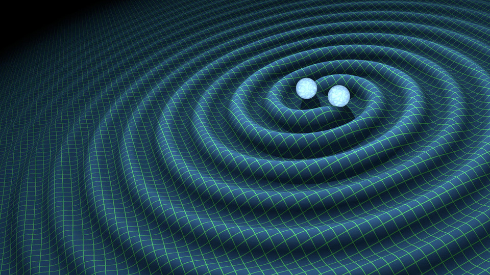
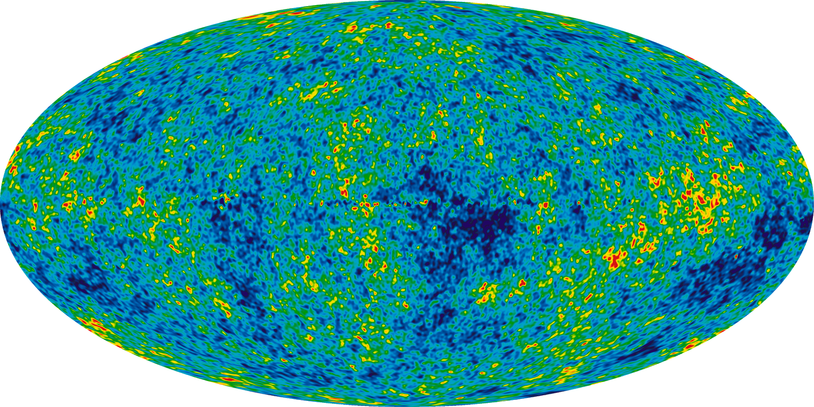

Data Analysis of NANOGrav 9yr Data Set
NANOGrav is one of several scientific collaborations across the globe that uses pulsar timing arrays in order to detect gravitational waves. Pulsars are like interstellar lighthouses, each emitting signals at regular intervals, and we can predict when each pulse should arrive at the Earth. By taking the difference between the expected time-of-arrival (TOA) and the actual TOA, we obtain residuals for each measurement. These residuals can be used to detect gravitational waves, since a passing gravitational wave will stretch and compress spacetime between the Earth and the pulsar. This varyation in spacetime contributes to earlier or later TOAs for the pulses. The sensitive frequency range is in the nanohertz regime (thus NANOGrav). To put it another way, these gravitational waves have periods of oscillation on the order of years to tens of years.
I am currently working on data analysis for the continuous gravitational wave search by using Bayesian analysis tools written by members of NANOGrav. Sources of these signals are super massive black hole binaries (SMBHBs). As galaxies merge, the super massive black holes at their centers find each other due to their gravitational interaction, and begin to orbit one another. As the SMBHBs orbit each other they will emit a continuous gravitational wave signal, and it is these signals that we are looking for in the timing residuals.
Relic Gravitational waves
Info on relic gravitational waves...
